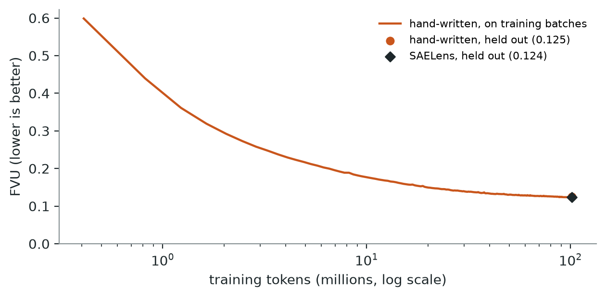
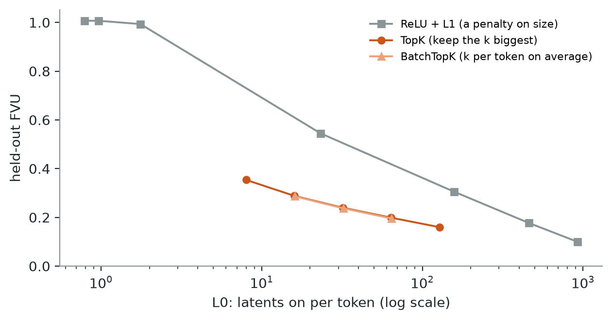
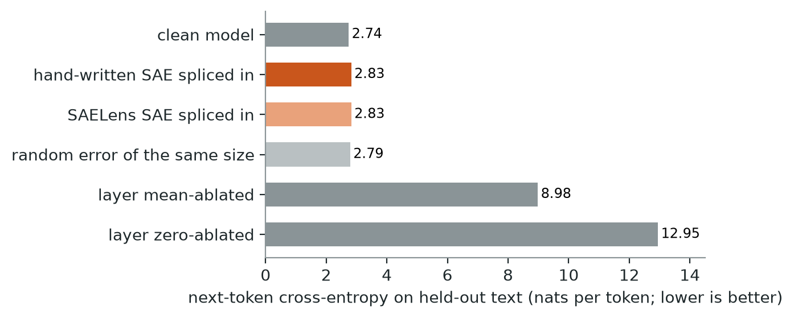
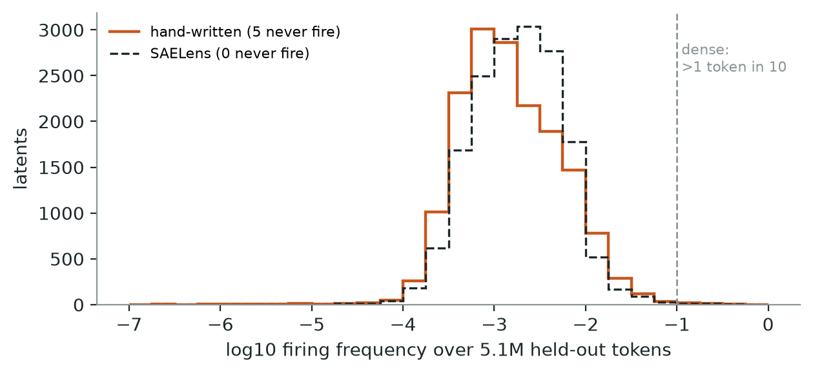
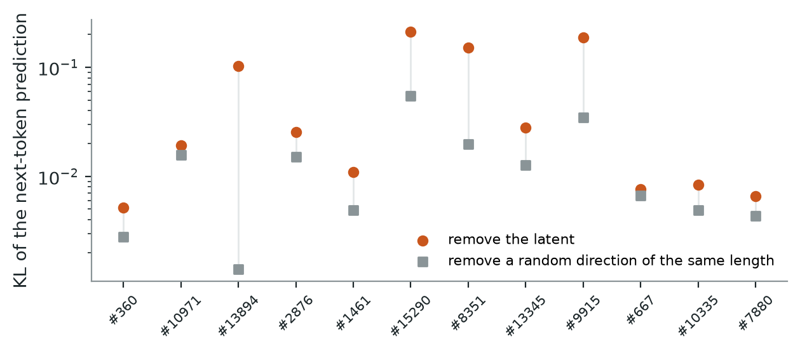
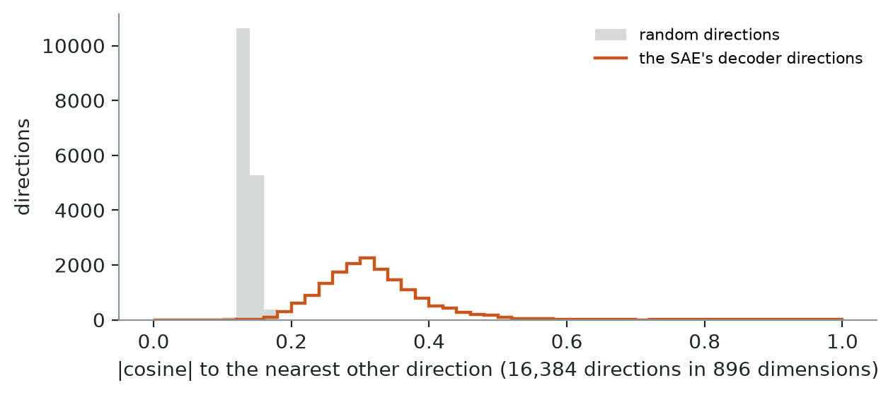
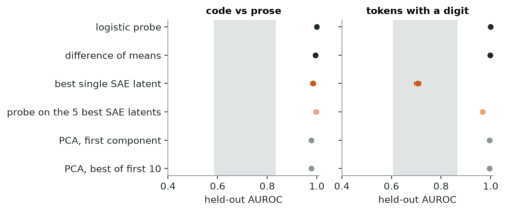
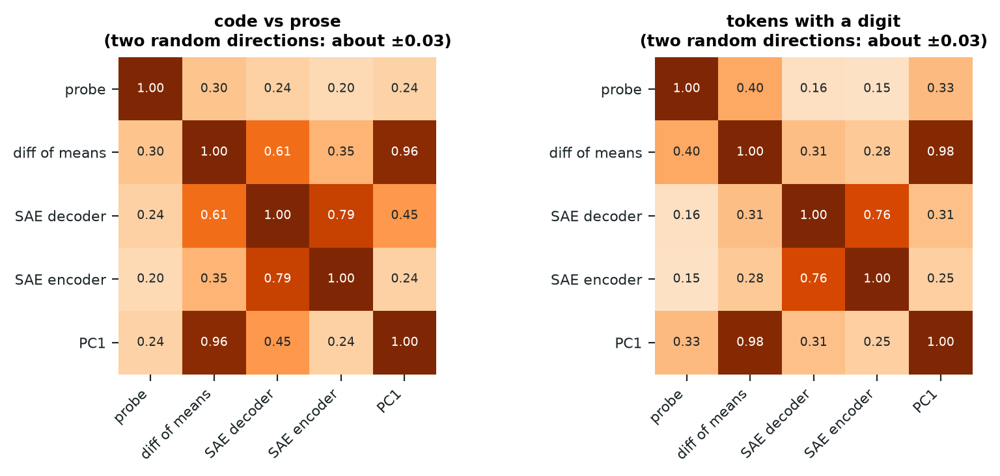

← Research·Experiments·
How to train a sparse autoencoder: a 101 on a small language model
Every step from the maths on three numbers to a sparse autoencoder anyone can download: train one by hand and one with SAELens on Qwen2.5-0.5B, check it against bars set in advance, read what its latents mean, see when a plain probe does better, and publish it on the Hugging Face Hub. Every number comes from the run that made the published file.
results/ by make_cover.py.Summary: the short answer and the key results
In short
What does it take to train, check and publish a sparse autoencoder on a small language model? About an hour of one rented GPU and a handful of checks. A 60-line hand-written TopK SAE (16,384 latents, 64 on per token) trained on 102M tokens of Qwen2.5-0.5B’s middle layer misses 12.5% of the variance on held-out text; SAELens on the same tokens misses 12.4%. Spliced into the model, it wins back 98.6% of the loss that mean-ablating the layer costs, though its error hurts the model 1.7 times as much as a random error of the same size. Latents drawn at random read cleanly, and removing one where it fires moves the next-word prediction 4.3 times more than a random push. For detecting a labelled concept, a plain logistic probe matched or beat the best single latent (1.000 against 0.985 and 0.706). The SAE is on the Hugging Face Hub in SAELens’s format, and loading it back on a fresh machine reproduces its numbers to 10−4.
Key results
- Hand-written and SAELens agree: held-out FVU 0.125 and 0.124 on the same 102M tokens (bar < 0.25), 5 and 0 dead latents of 16,384, and the same spliced-in cross-entropy, 2.829 nats per token.
- The model still works on the SAE’s rebuild: 98.6% of the mean-ablation loss is won back (95% CI [98.5%, 98.7%]; bar 90%); PCA with the same 64 numbers per token misses 50.5% of the variance, against 12.5%.
- But the SAE’s error is not noise: it raises cross-entropy 1.7 times as much as a random error of the same size (95% CI [1.6, 1.8]).
- Latents carry what the model uses: removing one of 12 latents drawn at random moves the next-token prediction 4.3 times more than a same-length random direction (95% CI [3.3, 5.6]); 12 of 12 beat their random twin.
- Cheap labels check out, with a caveat: an open model’s labels pick out held-out firing snippets 0.84 of the time against 0.58 with another latent’s label (48 latents, $0.03).
- A probe matches or beats the best single latent: 1.000 AUROC on code vs prose and on digit tokens, against 0.985 and 0.706; the SAE splits “digit” over several latents (five of them reach 0.968).
- Published and reloaded: both SAEs are on the Hugging Face Hub in SAELens’s format; downloaded on a fresh machine through
SAE.from_pretrained, they give the same FVU to within 4 × 10−8 and the same cross-entropy to within 3 × 10−5 (bar 10−3).
01Introduction
Feed Qwen2.5-0.5B the sentence “A natural arrangement of British plants: according to their relations to…” and, at the word “according”, its residual stream holds 896 numbers that mean nothing to a person. Pass them through the sparse autoencoder this note trains and one of 16,384 latents lights up: #13894, which fires on 0.04% of tokens and whose 30 strongest firings in 5M held-out tokens are all on the word “according”. Remove that one latent from the model's activations where it fires, and the model's guess for the next word moves 73 times further than when a random direction of the same size is removed. That is what an SAE gives you: a readable list of the parts the model is using, some of which it really relies on.
What is known. A sparse autoencoder (SAE) is a small network that rewrites a model's activation as a short list of directions from a large learned dictionary. Since Towards Monosemanticity and Sparse Autoencoders Find Highly Interpretable Features, SAEs have become a standard way to read language models, and releases such as Gemma Scope publish hundreds of them. The recipe has settled: TopK sparsity with an auxiliary loss for dead latents (Scaling and evaluating sparse autoencoders), trained with libraries such as SAELens.
What is missing. The pieces are spread over papers, library docs and notebooks. A newcomer rarely sees one SAE go all the way from raw text to a published file, with the checks that say whether it is any good, the traps that break it, and an honest look at when a plain probe would have done the job.
What does it take to train, check and publish a sparse autoencoder on a small language model, and how do you know it works?
What this note does. It walks one SAE through every step, with the code, the printed output and the numbers of the run that produced the published file. Its contributions:
- A hand-written TopK SAE in about sixty lines of PyTorch, trained beside SAELens on the same 102M tokens, so the two can be compared number for number.
- An evaluation with pass bars written before the run, a random-error control and a cheap baseline, and a comparison of the SAE with a probe, a difference-of-means direction and PCA on two concepts with free labels.
- A published SAE (on the Hugging Face Hub, in SAELens's format, with a model card), checked by loading it back on a fresh machine, and a feature dashboard.
What counts as a working SAE. Fixed in the plan before the full run:
- It rebuilds held-out activations: FVU (the fraction of variance it misses) under 0.25.
- The model still works when it runs on the SAE's rebuild: at least 90% of the cross-entropy lost by mean-ablating the layer is won back.
- Its dictionary is used: under 10% of latents never fire, under 1% fire on more than one token in ten.
- The published file reproduces these numbers when loaded from the Hub in a fresh process, to 0.001.
02What an SAE is, on a toy you can see
An SAE is a parts list for activations. At every token, Qwen2.5-0.5B passes 896 numbers from layer to layer: the residual stream. They hold whatever the model knows about the text so far, but not one number per idea: the model tracks far more ideas than it has numbers, so ideas share them. Reading them directly is like reading a smoothie. An SAE keeps a large pantry of directions, its latents (here 16,384), and writes each activation's recipe card: these 64 directions, in these amounts. The card is easy to read, and the test of a good card is that blending its ingredients gives the smoothie back.
The whole SAE is three lines. With x the activation:
pre = (x - b_dec) @ W_enc + b_enc # a score for every latent (the encoder)
z = keep the k biggest of pre, ReLU # all other latents set to 0 (TopK)
x_hat = z @ W_dec + b_dec # k decoder rows, weighted, plus a bias (the decoder)Training makes |x - x_hat|² small. On three numbers, by hand: take x = [2, 0, 1], four latents (the three axes and a mixed one, [0.6, 0, 0.8], with a bias of −0.5) and k = 2. The scores are [2.0, 0.0, 1.0, 1.5]; the two biggest are latents 0 and 3; the rebuild is 2.0 × [1, 0, 0] + 1.5 × [0.6, 0, 0.8] = [2.9, 0, 1.2], off by 0.85 because only two parts were allowed. That is the trade-off between sparsity and accuracy in one line.
Why every decoder row has length 1. A latent adds z_i × W_dec[i]. Without a rule, training could make a row ten times longer and its activation ten times smaller for the same rebuild, and "how strongly does this latent fire" would mean nothing. Fixing each row at length 1 puts all the size in z, so firing strengths can be compared across latents and tokens.
Superposition, in two dimensions. Figure 1 squeezes five concepts into a plane. Five arrows cannot all sit at right angles in two dimensions; that crowding is superposition, and it is why no single axis means one concept. Each of 600 points uses one or two concepts at a time. Trained with one part per point (k = 1), a five-latent SAE puts a decoder arrow on every concept (cosine 0.99 or more) and misses 9.2% of the variance. With two parts per point it rebuilds every point exactly, but its arrows slide off the concepts (the worst falls to cosine 0.87), because in a plane almost any two arrows can rebuild any point. Sparsity is what pins the parts to something real; k must be small next to the room the data lives in, as k = 64 is next to 896 dimensions.
03How the study was run
- Plan, with the pass bars of section 1 and four predictions (section 6), written before any full-size run.
- Laptop pilot of every step at the small size (4,096 latents, k = 32, 4M tokens) on an M-series Mac. It found the attention sinks at positions 1 and 2 (section 4.1) and a SAELens default that left 35% of its latents dead in a short run.
- Tokens on a CPU container: 213,000 windows of 512 tokens from 105,000 FineWeb-Edu documents, plus 1,000 windows from 115 Python files.
- A 600-step pilot on one A10G, to time the full run (0.12 s a step).
- Two full trainings, hand-written and SAELens, each on 101.7M tokens on its own A10G.
- Evaluation of both on 1.0M held-out tokens (FVU), 5.1M (firing frequencies) and 200 windows (cross-entropy).
- A sweep of 21 small SAEs (exploratory; section 4.2 and 4.8), the comparison with probes on two concepts, and the reading of 48 latents drawn at random.
- Labels for those 48 latents from an open model, each checked on 10 held-out snippets.
- Publish and reload: SAELens format, model card, upload, and the full evaluation repeated on the downloaded copy on a fresh machine.
| Fixed before any full-size run | Changed after reading results |
|---|---|
| Model, layer, data and splits; d_sae 16,384, k = 64, learning rate 2e-4, batch 4,096, 100M tokens; pass bars; the four predictions; the 12 latents for the note drawn at random with seed 0 | The skipped positions (from the laptop pilot, before any full run): position 0 only became the first three positions, after the sinks at positions 1 and 2 were found. |
| Controls: a random error of the same size, a same-length random direction for the use test, 100 random directions, a wrong-label control for the labels | SAELens's time limit: its first full run ran at 13,400 tokens a second and would have hit the 100-minute limit, so it was stopped after 30 minutes and restarted with a 180-minute limit and the same settings. |
| — | Exploratory, labelled as such: the sweep of section 4.2 and the mistakes table of section 4.8 (one run each, no intervals). |
Conditions: the model in float32 with TF32 matrix multiplies on one NVIDIA A10G per step (Modal); the hand-written SAE trained in 51 minutes, SAELens in 75; every other step took 1 to 10 minutes. Cost: $4.23 of GPU and CPU time on Modal (billing report, including a cancelled first SAELens attempt and three failed starts) and $0.03 of OpenRouter calls for the labels, against a cap of $15 enforced in code.
04Step by step, with the numbers
4.1 Collect activations: drop the attention sinks, then scale by one number
Pick the model, the layer and the text. The model is Qwen2.5-0.5B, the base model rather than the chat one: it was trained on web text like the text the SAE will see, and most public SAEs are trained on base models (section 4.3 checks how well this one carries over to the Instruct model). The layer is the residual stream after block 11 of 24, the middle of the network. The text is FineWeb-Edu, open educational web text, streamed and cut into 512-token windows that each start with <|endoftext|> (Qwen has no beginning-of-text token). The splits come from the stream one after another, so no document is in two of them: 200,000 windows for training (101.7M text tokens), 2,000 for evaluation, 10,000 for reading latents, and 1,000 for the comparison in section 4.5.
Drop the attention sinks. Look at how big each position's activation is and one number jumps out: the median norm at position 0 is 1,424, against 16.5 for an ordinary token, 86 times larger. The model parks its spare attention on the first token (an attention sink) and stores a huge vector there that says nothing about the text. In 28 of 256 windows the sink sat on position 1 or 2 instead (24 and 4 windows). One such token among a batch of 4,096 would dominate the squared error, and the SAE would spend itself rebuilding junk. The rule here: skip the first three positions of every window and every <|endoftext|>. After it, no token past position 2 has a sink-sized norm (0 of 256 windows). SAELens does the same with seqpos_slice=(3, None) and exclude_special_tokens.
Scale by one number. Ordinary activations here have a mean squared length of 275. Multiplying by √(896 / 275) ≈ 1.80 brings it to 896, one per dimension, so a learning rate means the same at any layer of any model and published settings carry over. Section 4.6 folds the 1.80 back into the weights before publishing.
Do not store the activations; stream them. 101.7M tokens times 896 numbers times 4 bytes is 365 GB. The token ids take 0.41 GB, and recomputing activations costs half a forward pass, because a hook stops the model after block 11. So training reads windows, computes their activations and mixes them in a shuffle buffer of about half a million tokens: fill it from many windows, shuffle, hand out half as batches, refill. Without the shuffle, a batch would be 4,096 tokens from about eight documents, and the SAE would learn one topic at a time.
4.2 Train it twice: 60 lines by hand and SAELens land 0.0007 apart
The hand-written trainer is one loop. Each step takes 4,096 shuffled, scaled activations from the buffer, encodes them, keeps each token's 64 biggest scores, decodes, and nudges every weight to shrink the squared error. Then every decoder row is set back to length 1. The whole SAE class and its training loop are in sae101.py; the heart of a step:
pre = sae.pre(x) # (x - b_dec) @ W_enc + b_enc, for 4,096 tokens
vals, idx = pre.topk(k, dim=-1) # each token's 64 biggest scores
z = torch.zeros_like(pre).scatter(-1, idx, vals.relu())
x_hat = z @ sae.W_dec + sae.b_dec
dead = (step - last_fired) > 1000 # latents silent for 1,000 steps
loss = ((x_hat - x) ** 2).sum(-1).mean() + aux_k_loss(sae, x, x_hat, pre, dead, k_aux=448) / 32
loss.backward(); opt.step(); sae.normalise_decoder() # Adam, then every decoder row back to length 1Three details do most of the work. AuxK: a latent that never makes a token's top 64 never gets a gradient and stays dead forever, so latents silent for 1,000 steps get a side job, rebuilding what the live latents missed, which pulls them back towards something useful. The decoder bias starts at the data's average, so on step 1 the SAE already rebuilds the "average token" and the latents only describe differences. And each encoder column starts on its own decoder row, so a latent first fires on inputs that point its way. The settings: 16,384 latents (18.3 times the 896 dimensions), k = 64, Adam with learning rate 2 × 10⁻⁴ falling to zero over the last 20% of training, 24,828 steps of 4,096 tokens.
SAELens does the same job as a library call. 03b_train_saelens.py hands it the same windows (override_dataset), the same layer (it hooks the Hugging Face module model.layers.11 directly), the same skipped positions, sizes, learning rate, batch and token count:
cfg = LanguageModelSAERunnerConfig(
sae=TopKTrainingSAEConfig(d_in=896, d_sae=16384, k=64, normalize_activations="expected_average_only_in"),
model_name="Qwen/Qwen2.5-0.5B", model_class_name="AutoModelForCausalLM", hook_name="model.layers.11",
context_size=512, prepend_bos=False, seqpos_slice=(3, None), exclude_special_tokens=[151643],
training_tokens=24_827 * 4096, train_batch_size_tokens=4096, lr=2e-4, lr_decay_steps=4965)
sae = LanguageModelSAETrainingRunner(cfg, override_dataset=the_same_windows).run()Its defaults differ in small ways: it scales by √896 / mean |x| rather than √(896 / mean |x|²), starts decoder rows at length 0.1 and divides by their length inside the TopK instead of resetting them to 1, and weighs its own AuxK loss at 1.0. It writes the SAE in its own file format with the scale already folded in.
| Hand-written | SAELens 6.56.1 | |
|---|---|---|
| Code | about 60 lines (sae101.py) | a library call (03b_train_saelens.py) |
| Same windows, layer, d_sae, k, learning rate, batch, tokens | yes | yes |
| Minutes on one A10G | 51 | 75 |
| Held-out FVU | 0.125 | 0.124 |
| Dead latents | 5 | 0 |
| CE recovered vs mean-ablation | 0.986 | 0.986 |
Trained on the same 101.7M tokens, the two SAEs end almost on top of each other: held-out FVU 0.1248 by hand and 0.1241 with SAELens, the same spliced-in cross-entropy to four decimals (2.8290), and 5 against 0 dead latents. The plan predicted they would land within 0.03 of each other; they landed 0.0007 apart. The hand-written run took 51 minutes on one A10G (about 33,000 tokens a second), SAELens 75 (about 23,000 tokens a second in the run that finished; its first attempt ran at 13,400 and was restarted, section 3). Why SAELens was slower here was not investigated. Figure 2 shows the hand-written run’s training curve: most of the gain comes early (training FVU 0.18 after 10M tokens, 0.12 at the end).

TopK beats the older penalty recipe at the same sparsity. The first SAEs made latents sparse with a penalty on their size: z = ReLU(pre), and the loss adds a coefficient times the sum of z. A bigger coefficient turns more latents off but also shrinks the ones that stay on, because it charges for size, not count, so the rebuild suffers twice. TopK asks for exactly k latents and leaves their sizes free. In a sweep of small SAEs (4,096 latents, two passes over 3M tokens; exploratory), ReLU + L1 with 23 latents on per token misses 54% of the variance, while TopK misses 29% with 16 and 24% with 32 (Figure 3). BatchTopK, which keeps the k × 4,096 biggest scores across a whole batch so busy tokens can use more latents than simple ones, does slightly better than TopK at each k (0.237 against 0.240 at k = 32), and at inference becomes a fixed threshold.

4.3 Evaluate: every pass bar met, and the model keeps 98.6% of what it loses without the layer
Five numbers decide whether an SAE is worth reading. Each is measured on text the SAE never trained on, and each had its bar before the run:
- FVU (fraction of variance unexplained): the squared rebuild error divided by the activations' own spread. 0 is a perfect rebuild; 1 is no better than always guessing the average activation.
- L0: how many latents are on per token. For TopK it is k by construction.
- Dead and dense latents: latents that never fire in 5.1M held-out tokens are wasted; latents that fire on more than one token in ten are too general to read.
- Spliced-in cross-entropy, the "does the model still work" test: replace the layer's activations with the SAE's rebuild, let the model finish its forward pass, and measure how well it predicts the next token. Compare with the clean model and with the layer mean-ablated (every activation replaced by the average one). CE recovered is the share of the loss mean-ablation costs that the SAE wins back.
- A random error of the same size, the control: add to the clean activation a random vector exactly as long as the SAE's error at that token. If the SAE's error hurts more, what the SAE misses is something the model uses, not noise.
| Measure | Bar | Hand-written | SAELens |
|---|---|---|---|
| FVU (held-out) | < 0.25 | 0.125 · pass | 0.124 · pass |
| L0 (latents on per token) | = k | 64.00 · pass | 64.00 · pass |
| Dead latents (never fire) | < 10% | 5 (0.0%) · pass | 0 (0.0%) · pass |
| Dense latents (> 1 token in 10) | < 1% | 39 (0.24%) · pass | 35 (0.21%) · pass |
| Cross-entropy with the SAE (nats) | — | 2.829 (+0.086) | 2.829 (+0.085) |
| CE recovered vs mean-ablation | ≥ 0.90 | 0.986 [0.985, 0.987] · pass | 0.986 [0.985, 0.987] · pass |
| Its error vs a random error of the same size | — | 1.7x [1.6, 1.8] | 1.7x [1.6, 1.8] |
The hand-written SAE misses 12.5% of the variance (FVU 0.125) and leaves 5 of its 16,384 latents dead. PCA with the same 64 numbers per token, fitted on other tokens, misses 50.5%: the SAE's advantage is that each token may pick a different 64 directions. Spliced into the model, it raises cross-entropy from 2.744 to 2.829 nats per token (+0.086, 95% CI [0.080, 0.092] over 200 windows), against 8.985 with the layer mean-ablated: it wins back 98.6% of that loss (Figure 4).
The part the SAE misses matters more than its size suggests. A random error of the same length per token raises cross-entropy by only 0.050, so the SAE's own error costs 1.7 times as much [1.6, 1.8]. The SAE drops directions the model uses, not random noise, a known property of SAE errors (SAE reconstruction errors are (empirically) pathological). Two checks on the ruler itself: adding the error back (rebuild + error) gives the clean model to within 2 × 10⁻⁶, and the file exported in SAELens's format gives the same FVU to six decimals.


It carries over to the chat model. On the same text, Qwen2.5-0.5B-Instruct's activations at the same layer are rebuilt with FVU 0.138, and splicing the SAE in costs the Instruct model 0.083 nats per token (2.798 to 2.881): the chat model's middle layer is close enough to the base model's for one SAE to serve both on plain text. Chat transcripts were not tested.
4.4 Interpret: latents drawn at random read cleanly, and removing one changes the next word 4.3 times more than a random push
Read latents drawn at random, not the ones that look best. Picking the prettiest latents to show is the easiest way to oversell an SAE, so 48 latents were drawn with a fixed seed from the 16,294 that fire on between 1 token in 100,000 and 1 in 10, and the note shows the first 12. For each, the script scans 5.1M held-out tokens for the 20 places it fires hardest. The table below shows each one's strongest example.
| Latent | Strongest example (firing token marked) | Automatic label | Label check · use test |
|---|---|---|---|
| #360 0.61% of tokens | will fall from the sky. People often look for scientific explanations in order to explain spirituality | Preposition usage | 8/10 vs 6/10 use 1.9x |
| #10971 0.04% of tokens | to remove files, starting with the oldest files, in order to free up space on | Purpose clauses | 10/10 vs 10/10 use 1.2x |
| #13894 0.04% of tokens | 245.⏎- A natural arrangement of British plants: according to their relations to | Preposition "according to" detection | 10/10 vs 6/10 use 73.3x |
| #2876 0.06% of tokens | whether they should undergo the more invasive tests (which could, theoretically, inform abortions). | Hedging language | 8/10 vs 4/10 use 1.7x |
| #1461 0.09% of tokens | cause changes in a person’s behavior and lead to confusion and hallucinations. It usually | Hallucinations | 6/10 vs 6/10 use 2.2x |
| #15290 0.10% of tokens | is unlikely to damage the ozone layer since it⏎falls apart before it can reach the | Temporal relationships | 6/10 vs 8/10 use 3.9x |
| #8351 0.28% of tokens | healthy diet is an important part of a healthy lifestyle at any time, but it is | Temporal or universal quantifiers | 8/10 vs 6/10 use 7.7x |
| #13345 0.14% of tokens | , adsorption onto sorptive media, ion exchange, and membrane filtration. However, | Membrane mentions | 10/10 vs 4/10 use 2.2x |
| #9915 0.08% of tokens | key of any ‘power’ actually lies in the apparent “separation” eros and | Separation or "se" prefix detection | 10/10 vs 4/10 use 5.4x |
| #667 0.05% of tokens | look out for includes photos and media publications, such as old newspapers, which may provide | Named Entity Recognition | 6/10 vs 5/10 use 1.2x |
| #10335 0.03% of tokens | Du Bois (1868–1963), who had a | Year of death | 10/10 vs 6/10 use 1.7x |
| #7880 0.15% of tokens | see the 2007 International Religious Freedom Report.⏎d. Freedom of Movement | Section headings | 8/10 vs 4/10 use 1.5x |
Most read cleanly as one idea, and many are about grammar or word form rather than topic: “in order to” (#10971), “according to” (#13894), a hedge such as “theoretically” (#2876), the word piece “halluc” (#1461), “before” in a time clause (#15290), a year of death inside parentheses (#10335). A few are topical (membranes, #13345). Some are vague: a label such as “named entity recognition” (#667) fits many latents and checks out on only 6 of 10 snippets. Reading 20 snippets is how you form a hypothesis about a latent, not how you confirm one.
Every latent's full picture is on the feature dashboard: its top 20 snippets with every token shaded by the latent's activation, a histogram of how strongly it fires, its automatic label and how that label checked out, and the next tokens its decoder direction pushes up and down. That last view, the logit lens (the decoder direction run through the model's final norm and output layer), is mostly noise here: mixed-language word pieces such as “於” and “(strtolower”. Twelve blocks of processing lie between block 11 and the output, so a middle-layer direction says little about the next word on its own. Dashboards show it by default; at this depth, do not read much into it.
Cheap labels, checked before they are trusted. An open model (Llama-3.3-70B-Instruct) read each latent's top 10 snippets, with the firing token marked, and wrote a label of at most eight words. Then the same model got the label and 10 new, unmarked snippets: 5 from the latent's 21st to 25th strongest examples, which the labeller never saw, and 5 random ones, and said which the label describes. With the latent's own label it was right on 0.84 of the snippets on average (95% CI [0.79, 0.90], 48 latents); with another latent's label, the control, 0.58 [0.51, 0.64]. The difference, +0.27 [0.20, 0.35], clears the bar set before the run (0.70, and 0.15 over the control). The control is not at 0.50 because the five firing snippets resemble each other, so a model can often pick them out with almost any label; that is why the control matters. 38 of 48 labels scored 8 or more out of 10, 4 scored 5 or fewer, and several are the same vague guess (“proper nouns” in some form for 4 latents, “named entities” for 2 more). The 144 calls cost $0.03.
Presence is not use, so the latents were also removed. At each of the 12 latents' 20 strongest positions, the script subtracts exactly that latent's share of the rebuild from the residual stream and measures how far the model's next-token distribution moves (KL divergence), against subtracting a random direction of the same length at the same position. Removing the latent moves the prediction by 0.064 on average, the random direction by 0.015: 4.3 times as much (95% CI [3.3, 5.6]), and the latent beats its random twin for all 12 latents (Figure 6). The model uses what these latents carry.

Superposition, in the real model. 16,384 directions in 896 dimensions cannot all be at right angles. Each decoder direction's nearest neighbour sits at a median |cosine| of 0.310, against 0.136 for as many random directions, and 0.2% of latents have a near-twin above 0.9 (Figure 7). The dictionary is crowded in a structured way, which is what superposition predicts, and a near-twin is often a concept split in two.

4.5 SAE, probe, difference of means, PCA: a plain probe matches or beats the best single latent
An SAE is one of four linear tools a beginner meets, and the other three are cheaper. Each gives directions in the residual stream; they differ in whether they need labels, how many concepts they find, and what they are good for.
| Tool | Needs labels? | Concepts | Sparse? | Read · detect · steer · erase | Typical failure |
|---|---|---|---|---|---|
| SAE | no | thousands at once | yes | read ✓ · detect ✓ · steer sometimes · erase ✗ | a concept split over several latents, or absorbed into a narrower one; labels that are guesses |
| Logistic probe | yes | one per probe | no | read ✗ · detect ✓ · steer weak · erase ✗ | learns any shortcut that predicts the label (a word, a format) |
| Difference of means | yes (two groups) | one | no | read ✗ · detect ✓ · steer ✓ · erase partly | picks up everything else that differs between the two groups |
| PCA | no | a few, ranked by spread | no | read ✗ · detect sometimes · steer ✗ · erase ✗ | the biggest spread is often not the concept you want |
| LEACE (linear erasure) | yes | one | no | erase ✓ | removes the concept only linearly, and only exactly on the data it was fitted on |
Figure 8 shows the difference on the toy from section 2 (tab 3). Label the points by whether they hold concept A. PCA's first direction follows the biggest spread and misses A by 56°; the logistic probe (the boundary between A and not-A, and the arrow across it) and the difference of means both land within 2° of A, because they were told what to look for; the SAE latent lands about 8° off without any labels, as one of five parts it found at once.
On real text the probe wins on detection, and the SAE shows how the model splits a concept. Two concepts come with free labels: code vs prose (every token of Python standard-library source against FineWeb-Edu text) and digit tokens (FineWeb-Edu tokens that contain a digit against all others). Every tool is fitted on half the documents and scored on the other half; intervals resample held-out documents; the floor is 100 random directions, each given its better sign on the training half.
| Tool | Code vs prose (60,000 held-out tokens) | Digit tokens (39,582) |
|---|---|---|
| Logistic probe | 1.000 [0.999, 1.000] | 1.000 [1.000, 1.000] |
| Difference of means | 0.995 [0.992, 0.997] | 0.999 [0.998, 0.999] |
| Best single SAE latent | 0.985 [0.975, 0.992] (#3750) | 0.706 [0.693, 0.717] (#1675) |
| Probe on the 5 best SAE latents | 0.997 [0.995, 0.999] | 0.968 [0.962, 0.974] |
| PCA, first component | 0.978 [0.972, 0.984] | 0.996 [0.994, 0.997] |
| PCA, best of the first 10 | 0.978 [0.972, 0.984] (PC1) | 0.996 [0.994, 0.997] (PC1) |
| Fresh probe after LEACE erasure | 0.500 [0.500, 0.500] | 0.378 [0.329, 0.428] |
| 100 random directions: mean, max | 0.584, 0.835 | 0.606, 0.865 |
On code vs prose, one latent (#3750) is a code detector: it fires on 98.1% of held-out code tokens and 4.0% of prose tokens, and scores 0.985 AUROC. The logistic probe scores 1.000, so a single latent is close but not the best detector. On digit tokens the gap is the lesson: the best single latent fires on only 41.4% of digit tokens (AUROC 0.706), while a probe on the five best latents reaches 0.968 and the difference of means 0.999. The SAE has split "a digit" across several latents, one per kind of number, which the toy's neat arrows never show. A probe has no such problem because it was told the label. Figure 9 shows the scores. Figure 10 shows that the tools point different ways even when they score alike: the code latent's decoder row sits at cosine 0.61 with the difference of means but only 0.24 with the probe, and the probe at 0.30 with the difference of means. All are far above the ±0.03 of two random directions and far below 1. A probe's direction is whatever separates the classes best, including directions that only cancel noise, so it need not point where the concept lives.
PCA does well here for a dull reason. Its first component scores 0.978 and 0.996, but the comparison sets are half code (or half digit tokens) by construction, so the class split is the biggest spread in them: PC1 has cosine 0.96 and 0.98 with the difference of means. On ordinary text, where code is rare, the top component need not follow the concept at all, as in the toy (56° off).


Erasure removes a concept only where it was fitted. LEACE whitens the activations, removes the one direction along which the classes differ, and whitens back. On code vs prose a fresh probe trained after erasure scores exactly 0.500: nothing linear is left. On digit tokens it scores 0.378 on held-out documents, below chance, which means some linear signal survived on new documents (with its sign flipped). That missed the bar written before the run (within 0.1 of 0.5): the erasure is exact on the training documents, not on new ones.
You have labels and want to detect one concept: train a logistic probe (here 1.000 on both concepts). Check it with a random-direction floor and held-out documents.
You want to push the model towards a concept: start with a difference of means (the steering-vector recipe); try SAE latents second, against random directions of the same size.
You do not know what to look for: train or download an SAE and read latents drawn at random; treat what you see as hypotheses, and check them with a probe or an intervention.
You want a concept gone from the representation: LEACE, then check on held-out data that a fresh probe really is at chance.
You want the biggest axes of variation: PCA, but do not expect them to be the concept you care about.
This matches our earlier finding that small probes match SAE features at spotting AI text (0.997 for a probe and 0.998 for SAE features there): for detection, an SAE's advantage is that it needs no labels, not that it detects better.
4.6 Package and publish: the Hub copy, loaded by a stranger, gives the same numbers
Ship the format other people's tools read. SAELens loads an SAE from a folder holding cfg.json (the architecture, sizes and what it was trained on) and sae_weights.safetensors (W_enc, b_enc, W_dec, b_dec); Neuronpedia reads the same layout. 07a_package.py writes both SAEs that way, each in a folder named for its hook (the SAE id), plus a sparsity.safetensors of firing frequencies that dashboards use.
Fold the scale into the weights. The SAE was trained on activations times 1.80. Shipping that number separately invites someone to forget it, so it is folded in: W_enc times 1.80, W_dec and b_dec divided by 1.80. The latents are unchanged and the rebuild comes out in raw units, so whoever downloads the file feeds it raw activations. The exported file gives the same held-out FVU as the trained SAE to six decimals.
Name the hook three ways. One activation has three names: blocks.11.hook_resid_post in TransformerLens, SAELens and Neuronpedia; the output of model.layers.11 in Hugging Face Transformers; and hidden_states[12] when you ask Transformers for every layer (index 0 is the embeddings). The card gives all three, and the reload step checks that the TransformerLens name reads the same numbers. On the GPU it missed its bar (the two paths differ by 1.7 × 10−3 of the largest activation, against a bar of 10−4), because TF32 matrix multiplies keep only about three significant digits; on a CPU in full float32 they agree to 2.8 × 10−6 (the follow-up check). Same site, rounding apart.
Write the card from the results. The model card is generated from the result files, so every number on it comes from a run. It says the SAE is a teaching artifact; gives the model, layer, data, token count and skipped positions; the metrics of both SAEs; how to load it with SAELens and with plain PyTorch; its limits; and its licence. Qwen2.5-0.5B is Apache-2.0, which allows sharing derived weights with the licence; check this for every base model, because some carry their own terms.
from sae_lens import SAE
sae = SAE.from_pretrained("albertlieadrian/qwen2.5-0.5b-sae-101", "blocks.11.hook_resid_post")
latents = sae.encode(acts) # raw activations after block 11; skip the first 3 positions
rebuilt = sae.decode(latents)Load it back as a stranger would. 07c_reload_check.py runs on a fresh machine with nothing from training on its disk, downloads both SAEs through SAE.from_pretrained, and recomputes every number of section 4.3 through SAELens's own encode and decode. Both copies reproduce the local evaluation: held-out FVU within 4 × 10−8 (hand-written) and 0 (SAELens-trained), cross-entropy within 3 × 10−5, the same dead counts (5 and 0). The bar was 10−3. The upload, the format and the folded scale are right.
Neuronpedia hosts dashboards, search, steering and automatic explanations for public SAEs. Its upload guide (as of Nov 23, 2026) offers two routes: fill in a short form pointing at the Hugging Face repo in SAELens format, after which their team builds the dashboards and inference and lists the release; or upload features yourself with the neuronpedia Python package and an API key, with dashboard data made by SAEDashboard. This tutorial's SAE was not submitted: it is a teaching artifact, and a release worth a listing would cover more layers.
4.7 What SAEs are good for in practice: reading yes, detecting often, steering not automatically
An SAE gives you thousands of directions without asking for labels, which makes it a good tool for reading, a reasonable one for detecting, and an unreliable one for steering. Four of our own notes show where that line falls (each checked against the live page on Nov 23, 2026):
| Use | Note | What it found |
|---|---|---|
| Steer, and its limit | Turning open models into Golden Gate fans | A Golden Gate direction (the difference of two activation averages) made Gemma-2 9B and 2B name the bridge in 14 of 15 unrelated answers, but SAE features labelled “Golden Gate” did not steer on their own. Llama-3.1-8B got there (11 of 15 held-out answers) only with a direction plus a clamped SAE feature. Random directions: 0 of 45. |
| Read a hidden behaviour | Qwen-Scope finds the switch in a 7-cent password lock | Through a released SAE, 11 features switch on only when a password lock on Qwen3-8B is engaged, beyond anything a matched clean fine-tune moved. The SAE keeps only 8% to 42% of the lock's change to the residual stream, so the features are part of the picture. |
| Choose a unit to push | Mixing two writing voices inside Qwen | Difference-of-means directions moved 7 of 8 writing voices, SAE features 5, neuron communities 3, single neurons 1, attribution-graph circuits none. |
| Detect | Small probes match SAE features at spotting AI text | Probes and probes on SAE features both scored 0.997–0.998 AUROC on held-out authors; pushing against SAE features lowered a detector's P(AI) by 0.16, twice the probe direction's 0.08. |
So, with a new SAE: read latents drawn at random and treat what you see as hypotheses (section 4.4); to detect a concept you can label, train a probe first and use latents when you do not know what to look for (section 4.5); to steer, add a latent's decoder direction against a random direction of the same size, at the reply length you care about, counting replies that loop, and expect a difference-of-means direction to be the stronger baseline.
4.8 Common mistakes, each with what it cost here
Lists of SAE mistakes are hypotheses; here each one was run. Six training mistakes were each made on their own in a small SAE (4,096 latents, k = 32, two passes over 3M tokens), and two usage mistakes were made with the published SAE. All are single exploratory runs without intervals.
| Mistake | Held-out FVU | Never fired | Why it hurts |
|---|---|---|---|
| The right recipe (TopK, k = 32) | 0.240 | 0.0% | — |
| No AuxK | 0.240 | 0.0% | dead latents never get a gradient back |
| Learning rate 10x too high (4e-3) | 0.214 | 11.7% | the steps overshoot |
| Learning rate 10x too low (4e-5) | 0.424 | 0.0% | too slow for the token budget |
| No normalisation (raw activations) | 0.240 | 0.0% | the learning rate means something else at this scale |
| Attention sinks left in | 0.240 | 0.2% | a few huge tokens dominate the error |
| 1/20 of the tokens | 0.530 | 0.0% | the dictionary has not settled |
| Wrong layer, hidden_states[11]: block 10's output (the main SAE) | 0.201 | — | used on the wrong numbers: 1.6x the error of the right use (0.124) |
| Wrong layer, hidden_states[13]: block 12's output (the main SAE) | 0.193 | — | used on the wrong numbers: 1.6x the error of the right use (0.124) |
| Decoder bias forgotten (the main SAE) | 0.517 | — | used on the wrong numbers: 4.2x the error of the right use (0.124) |
Four mistakes cost a lot: too small a learning rate (FVU 0.424 against 0.240) and too few tokens (0.530) leave the dictionary unfinished, and using the SAE wrongly is worse than training it badly: decoding without the decoder bias misses 52% of the variance, and reading block 10's or block 12's output instead of block 11's increases the error by 56% to 62%. Too large a learning rate looked better on FVU (0.214) while leaving 11.7% of the latents unused. Three mistakes cost almost nothing at this size: no AuxK changed nothing (the same FVU to four decimals), most likely because no latent went 1,000 steps without firing in a 1,466-step run, so AuxK never switched on (in the laptop pilot, SAELens's short run left 35% of its latents dead); skipping normalisation changed nothing perhaps because this layer's activations (mean squared length 275) are within a factor of about 3 of the target of 896; and leaving the attention sinks in changed held-out FVU by 0.0006. They may matter more in longer runs, wider dictionaries or layers with larger activations, none of which was tested here, so the recipe keeps all three.
05Implications for AI safety
An SAE is a cheap, checkable way to look inside a model, and checks matter more than the pictures. This one cost a few dollars of GPU time and rebuilds the middle of a small model well enough that the model keeps 98.6% of its performance. That makes SAEs practical for anyone auditing a model they can run: reading what a fine-tune changed, looking for a hidden behaviour, or finding a direction to monitor. Two results here limit what such an audit can claim. The SAE's error is not noise (it hurts the model 1.7 times as much as a random error of the same size), so whatever the SAE misses may be exactly what an audit is looking for; our password-lock study found the same, with the SAE keeping only part of a lock's change. And for detecting a labelled concept, a plain probe matched or beat the best latent on both concepts tested. A latent that looks like the concept is a lead, not a detector or a lever, until a probe or an intervention has been run against it.
Recommendation: publish every SAE with its spliced-in cross-entropy, a random-error control and a reload check, and test any latent you want to rely on against a probe and a random direction.
06Predictions
Written in the plan before the full run and scored by its thresholds:
| # | Prediction (threshold; confidence) | Result | Hit? |
|---|---|---|---|
| P1 | The hand-written SAE passes the FVU and cross-entropy bars (FVU < 0.25, CE recovered ≥ 0.90; 75%) | 0.125; 0.986 | hit |
| P2 | SAELens on the same tokens lands within 0.03 of FVU of the hand-written SAE (60%) | 0.0007 | hit |
| P3 | The SAE’s error costs more than twice a random error of the same size (70%) | 1.7 [1.6, 1.8] | miss |
| P4 | On code vs prose, a logistic probe matches or beats the best single latent (AUROC difference ≥ 0; 70%) | +0.015 | hit |
P3 missed by its threshold, not in direction: the SAE’s error does hurt more than random noise of the same size, but 1.7 times as much rather than more than twice. What surprised me: how closely 60 hand-written lines and SAELens agreed (0.0007 of FVU), and that three “classic” mistakes cost nothing at the sweep’s size. What I’d change: run the mistakes at full size, and give the label check a harder control (snippets of a similar topic, not random ones). Lesson for the guide: a list of common mistakes is a list of hypotheses; run each one where it will matter before teaching it.
07What this does not show
- One small SAE. 16,384 latents, k = 64, one layer of one 0.5B model, 102M tokens of English educational web text. Larger models, wider dictionaries and more tokens give different numbers; public SAEs for research train on billions of tokens.
- One seed. Each SAE was trained once; the intervals are over held-out windows or documents, not over training runs. The hand-written and SAELens SAEs differ in initialisation and defaults as well as in code.
- The sweep and the mistakes are single exploratory runs on a small SAE (4,096 latents, 3M tokens), so a difference of a few thousandths of FVU there means nothing. Three mistakes cost almost nothing at that size; they were not tested at full size.
- Labels come from one model (Llama-3.3-70B-Instruct), checked on 10 snippets per latent with an easy control (0.58, not 0.50). A passing check says the label picks out the latent's own examples, not that it says what the latent does.
- The use test removes one latent at its top 20 positions. It shows the model uses what the latent carries there, not what it does on ordinary text, and it is not a steering test: no latent was added to generate text.
- The comparison uses two easy concepts with free, exact labels and balanced classes. Concepts that are rare, fuzzy or not linearly readable could favour different tools.
- Transfer was checked on plain text only. The Instruct model's chat transcripts were not tested.
08Reproduce it
Every step is one script in experiments/sae-101/; each prints what it measured and ends in self-checks. ./reproduce.sh --dry-run prints every command behind this note's numbers.
# the laptop version (4,096 latents, k = 32, 4M tokens): about 30 minutes on an M-series Mac
python 01_toy.py
python 02_collect.py --size small
python 03a_train_handwritten.py --size small
pip install sae-lens==6.56.1 && python 03b_train_saelens.py --size small # SAELens in its own environment
python 04_evaluate.py --size small
python 06_compare.py --size small && python 05_interpret.py --size small
# the full version on Modal (one A10G per step), then package, upload and reload
MODAL_IMAGE_BUILDER_VERSION=2025.06 modal deploy modal_app.py
python modal_app.py spawn tokens # then collect, train_handwritten, train_saelens, evaluate, sweep, compare, interpret
python 07a_package.py --repo <you>/qwen2.5-0.5b-sae-101 && python 07b_upload.py --repo <you>/qwen2.5-0.5b-sae-101
python modal_app.py spawn reloadThe full run's printed output is in recorded/full/, the laptop run's in recorded/small/. Big files (token windows, checkpoints) are not shipped; the scripts rebuild them.
09What’s next
- Steer with a latent. Take the latents section 4.4 drew and add each decoder direction at a few strengths, against random directions of the same size, scoring topic, fluency and loops at 120-token replies: the test our Golden Gate note says not to skip.
- A Matryoshka SAE on the same tokens, to see whether nested dictionaries keep the digit concept in one broad latent instead of splitting it (section 4.5).
- More layers, then submit. SAEs at blocks 5 and 17 with the same recipe, then the Neuronpedia form for the set.
10Questions and answers
What is a sparse autoencoder?
A sparse autoencoder (SAE) is a small network that rewrites one of a model's activations as a short list of directions from a large learned dictionary: here, at most 64 of 16,384 directions for each token of Qwen2.5-0.5B. Each direction, a latent, often fires on one readable idea, such as the phrase “according to”, which makes the model's internal state easier to read.
How many tokens do you need to train an SAE?
For a 16,384-latent SAE on a 0.5B model, 102M tokens gave a held-out FVU of 0.125, and most of the gain came early: the training FVU was 0.178 at 10M tokens and 0.123 at 102M. With 1/20 of the tokens a small SAE missed 53% of the variance against 24%. Research SAEs use billions of tokens.
How do you know if an SAE is good?
Check five numbers on held-out text: FVU (here 0.125), L0 (64), dead latents (5 of 16,384), dense latents (39), and the cross-entropy of the model running on the SAE's rebuild (98.6% of the mean-ablation loss won back). Add a random error of the same size as a control and a cheap baseline such as PCA (0.505 with 64 components).
Should I write my own SAE or use SAELens?
Write a small one once to understand it, then use SAELens to train and publish. Here a 60-line hand-written TopK SAE and SAELens 6.56.1, trained on the same 102M tokens, reached held-out FVU 0.125 and 0.124, and SAELens writes the file format that other tools and Neuronpedia read.
Is an SAE better than a linear probe?
Not for detecting a concept you can label. A logistic probe scored 1.000 AUROC on code vs prose and on digit tokens; the best single SAE latent scored 0.985 and 0.706. An SAE's advantage is that it needs no labels and finds thousands of concepts at once.
How do I publish an SAE on Hugging Face and Neuronpedia?
Save it in SAELens's format (cfg.json and sae_weights.safetensors, with the normalisation folded in), write a model card with the model, layer, data and metrics, upload the folder, and check that SAE.from_pretrained loads it and reproduces your numbers. For Neuronpedia, fill in their upload form or use their Python package with an API key.
AAppendix
Data files
Every number in this note comes from these files; the README lists every field.
| File | What it holds | Sections |
|---|---|---|
| results/toy.json | The by-hand example; the toy's concepts, points and SAEs at k = 1, 2, 3; the four tools' directions | 2, 4.5 |
| results/full/collect.json | Norms by position, sink counts, the scale, token counts, storage sizes | 4.1 |
| train_handwritten.json, train_saelens.json | Settings, minutes, and the hand-written run's log every 100 steps (train FVU, AuxK loss, dead share, learning rate) | 4.2 |
| results/full/sweep.json | 15 small SAEs (TopK, BatchTopK, ReLU + L1), 6 mistake runs, and the main SAE used wrongly | 4.2, 4.8 |
| results/full/evaluate.json | FVU, L0, dead and dense latents, firing-frequency histograms, cross-entropy under six conditions with intervals, PCA, transfer to the Instruct model | 4.3 |
| results/full/interpret.json | For each drawn latent: frequency, top and held-out snippets with per-token activations, logit lens, histogram; the use test; superposition | 4.4 |
| results/full/autolabels.json | Each latent's automatic label and its detection check against a wrong label; spend | 4.4 |
| results/full/compare.json | AUROC with intervals for every tool on both concepts, random directions, cosines, LEACE | 4.5 |
| results/full/reload.json | The Hub copies' numbers and their differences from the local ones; the hook-name check | 4.6 |
Further reading
- A primer on sparse autoencoders: a gentle tour of features, superposition and how SAEs are labelled and checked.
- Toy Models of Superposition: where the picture in Figure 1 comes from.
- Towards Monosemanticity and Sparse Autoencoders Find Highly Interpretable Features in Language Models: SAEs on language models.
- Scaling and evaluating sparse autoencoders: TopK and AuxK. BatchTopK sparse autoencoders. Learning multi-level features with Matryoshka sparse autoencoders.
- SAE reconstruction errors are (empirically) pathological: the random-error control of section 4.3.
- LEACE: perfect linear concept erasure in closed form. SAELens, Neuronpedia's upload guide, SAEDashboard.
Tech stack
| Model | Qwen2.5-0.5B (Apache-2.0) in float32 with TF32 matrix multiplies, Hugging Face Transformers 5.24 |
|---|---|
| SAEs | Hand-written PyTorch 2.15 (sae101.py); SAELens 6.56.1 |
| Compute | One NVIDIA A10G per step on Modal: $4.23 in all (billing report); about 30 minutes on an M-series Mac for the small version |
| Labels | Llama-3.3-70B-Instruct through OpenRouter, temperature 0 (optional step) |
| Page | HTML, an inline-SVG widget with no libraries, figures by matplotlib |
Revision history
- Nov 23, 2026: First published.
How to cite
@misc{lie2026sae101,
author = {Albert Lie},
title = {How to train a sparse autoencoder: a 101 on a small language model},
year = {2026},
month = nov,
url = {https://albertlieyingadrian.github.io/steerlab/experiments/sae-101/report/}
}